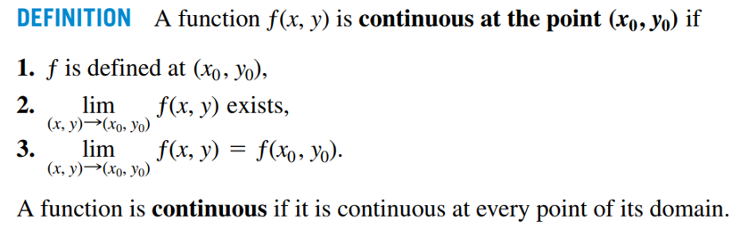

多元函数连续，可微，偏导存在，偏导连续关系证明与总结
笔者最近在学习多元函数连续，可微，偏导存在，偏导连续之间的关系时，发现中英文书对于部分以上概念的定义有所不同。 这导致一些中文书（同济大学高等数学第六版）上成立的关系，根据英文书（Thomas Calculus 13th Edition）的定义未必成立。 本文将对中英文书的定义进行比较，并分别根据两本教材的定义对多元函数连续，可微，偏导存在，偏导连续之间的关系进行总结，内容如有错误，欢迎指正。
背景
关于我为什么会发现两本教材的定义不同，得从一张图片说起
这是一张我以前高数老师的课件里的图片，之前一直没觉得这张图有什么问题，直到我看到了这个函数
根据关系图，函数偏导数连续可以推出函数可微。这个函数的偏导数在原点都是连续的
但是这个函数在原点是不可微的，因为连续是可微的前提条件，这个函数在原点不连续，那么它一定不可微（后面会有证明）。那这是不是和关系图矛盾了吗？在一次互助课堂上，我了解到今年还有老师在用这个关系图，因此我觉得这个图有错的概率不大，所以我决定到教材里看看是怎么回事。
定义比较
连续
对于多元函数连续性的定义，中文书和英文书上是基本一样的。在中文书在定义连续的时候引入了聚点的概念，这个概念在中文第53页有定义，对于引入聚点的原因可以参考这篇文章。
中文书：

英文书：

偏导数
两本教材都用到了极限来定义偏导数，中文书的定义里多了一句
设函数
在点 的某一邻域内有定义
但这个应该是英文书的隐含条件，不然
中文书：
英文书：
可微
中文书：

英文书：
两本教材对于可微的定义乍一看有很大的不同（中文书里的
关系证明
连续
反例：
该函数在原点连续但偏导不存在，它的图像长这样
偏导存在
反例：
该函数在原点不连续但偏导存在
连续
反例：
偏导存在是可微的前提条件，这个函数偏导不存在所以不可微
可微
偏导存在
反例：
还是这个图😅
可微
根据定义，可微是偏导存在的必要条件，所以函数可微则偏导存在
可微
反例：
偏导连续
终于到了揭晓答案的时候了，偏导连续可以推出可微吗？
我们来看看中文书的证明
证明过程中有一个问题，这个证明用到了
NO！观察仔细的同学会发现中文书第72页小字写道
多元函数的偏导数在一点连续是指：偏导数在该点的某个邻域内存在
噢，根据这个定义，偏导数必须在原点附近的邻域内存在，而原函数在原点附近的邻域是不止包含
结论
根据英文书第820页推论
COROLLARY OF THEOREM 3 If the partial derivatives
and of a function are continuous throughout an open region , then is differentiable at every point of
偏导数如果在一点的邻域内连续，则函数在该领域内处处可微。
所以，为了减少误解，我们还是把关系图改成这样吧！